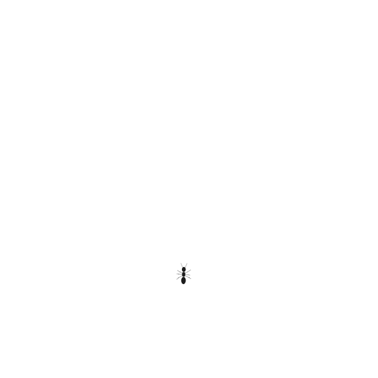
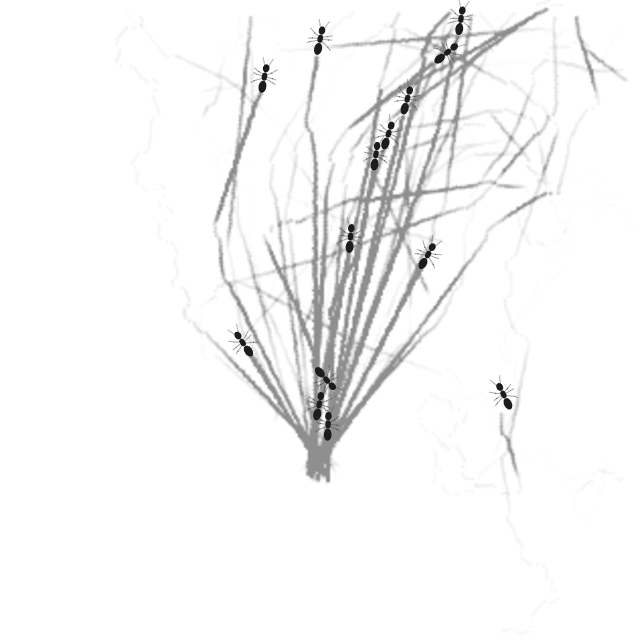
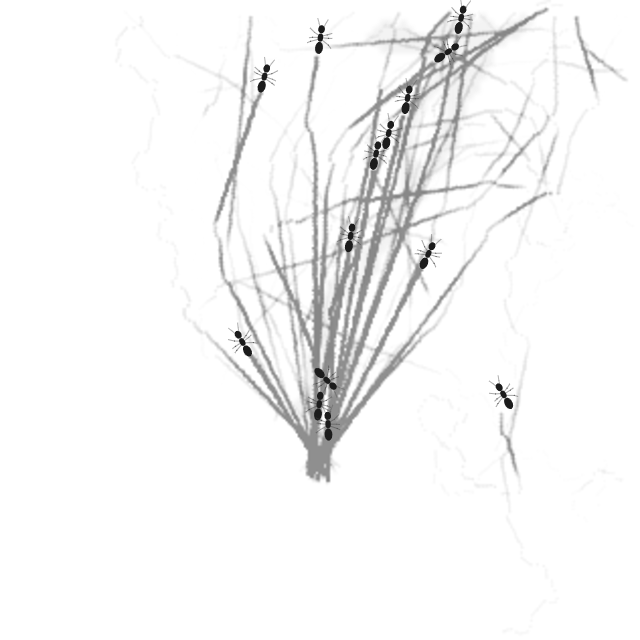
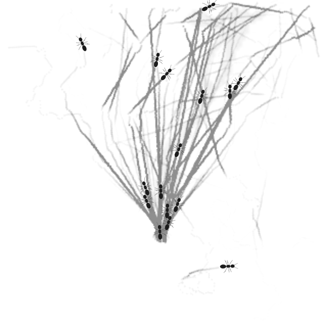
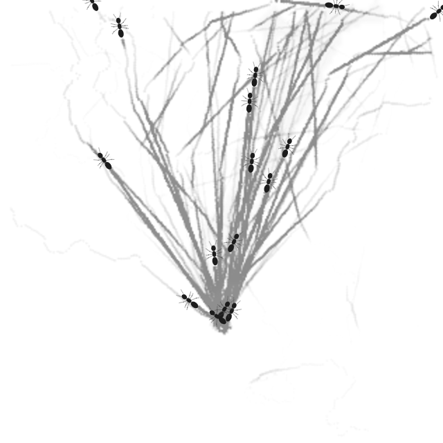
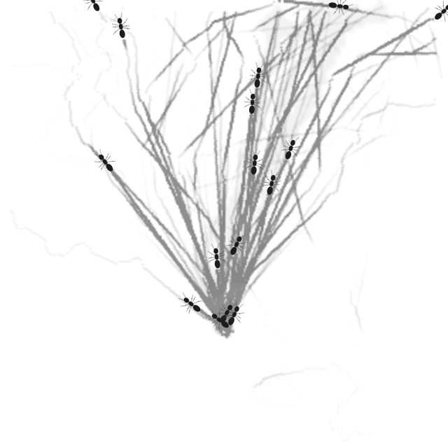

A
B
C
| State | A | B | C |
|---|---|---|---|
| Initial state |  |  |  |
| Immediately before first Plate |  |  |  |
| Immediately after first Plate |  | ||
| First Plate +15 model seconds |  | ||
| First Plate +30 model seconds |  |  |
Same production run and model-time frame map. Labels A/B/C are neutral; use the still rows for exact milestone states.
| State | A | B | C |
|---|---|---|---|
| Initial state | |  | |
| Immediately before first Plate |  | | |
| Immediately after first Plate |  | ||
| First Plate +15 model seconds |  | ||
| First Plate +30 model seconds |  |  |